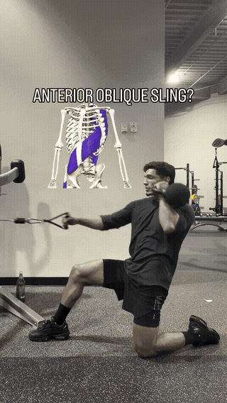
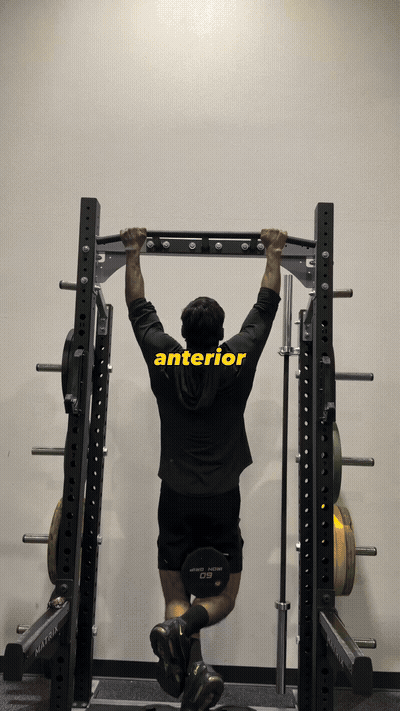
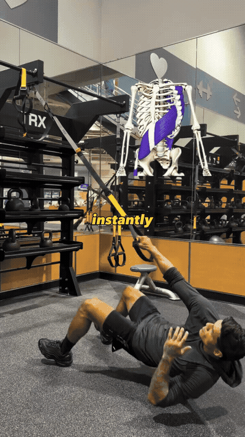

The interior (anterior) oblique sling is the body's kinetic-chain link across the torso. It's the system you should train — overdoing heavy lifting misses the point. Heavy work is fine, you just don't need more than 2-3 sets.

Kneeling with one leg extended back, the other bent, pull the cable from the high anchor down and across toward the opposite hip. The obliques and the whole chain sequence through the torso.

On a 45° incline bench, press the dumbbells from the chest up. Chain-sequenced: connect the feet/hips through the torso as the arms press. You don't need more than 2-3 quality sets.